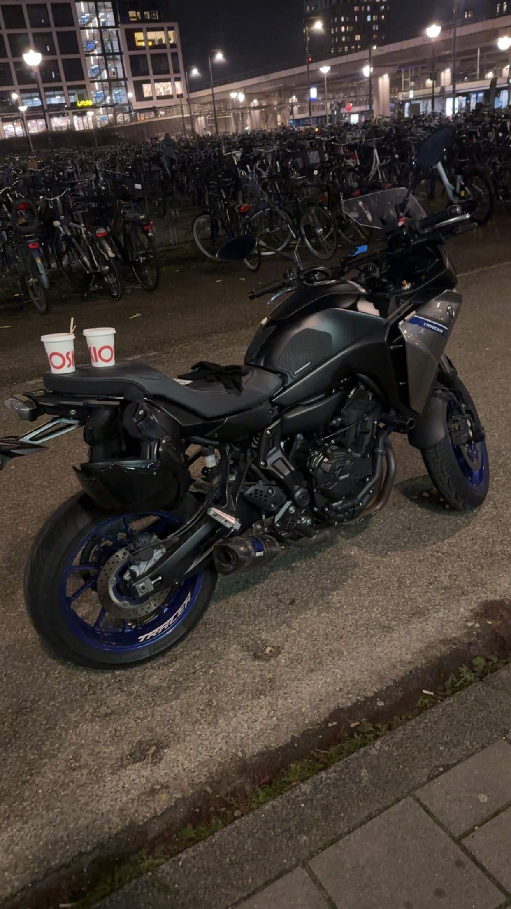
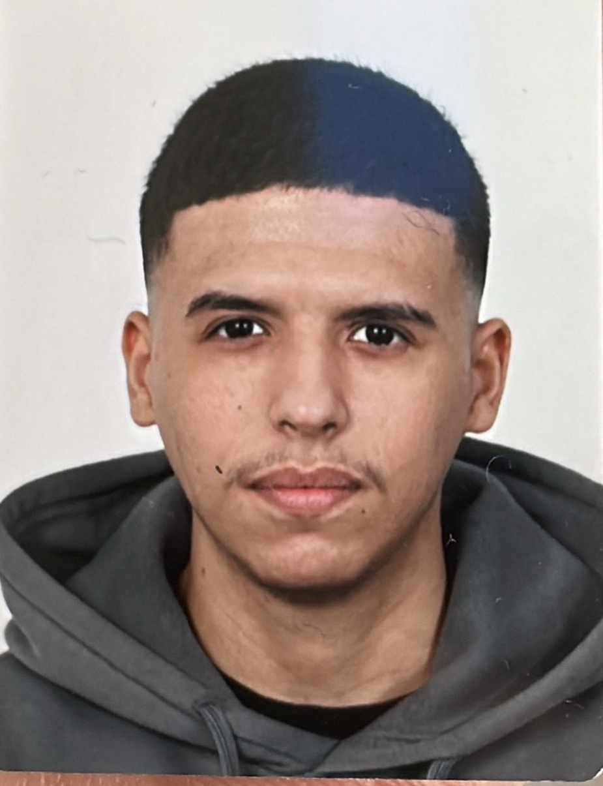
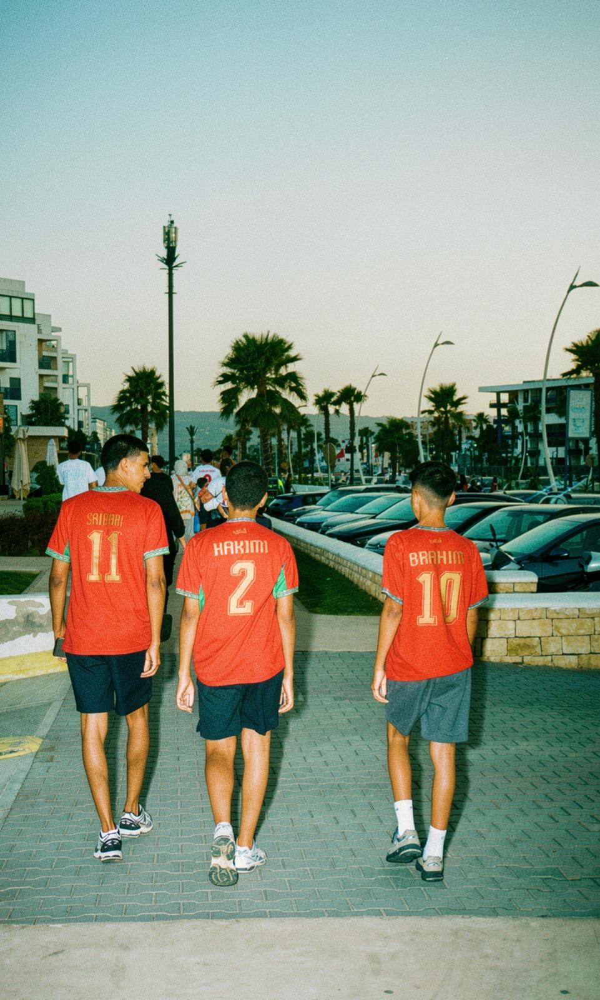
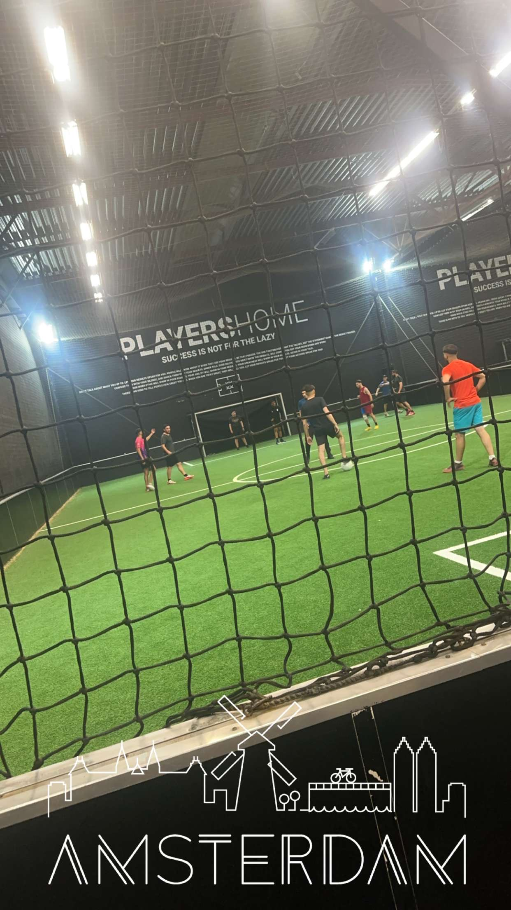

Motor
Ik hou ervan om op zonnige dagen met de motor door het drukke verkeer te rijden.
Ad Frontend Design & Development


Ik hou ervan om op zonnige dagen met de motor door het drukke verkeer te rijden.

Ik wil graag verschillende landen bezoeken, nieuwe plekken ontdekken en nieuwe ervaringen opdoen.

Ik blijf graag in beweging. Daarom voetbal ik elke week met vrienden in een indoor sporthal.